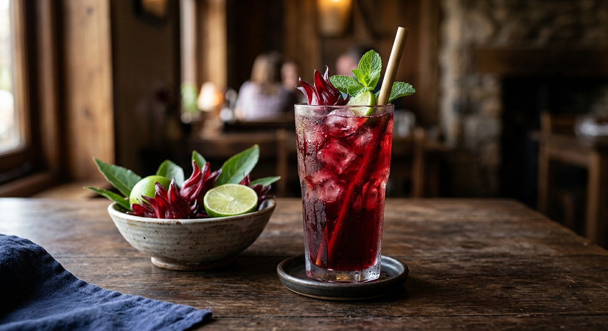

Dried roselle calyxes simmered until the water turns deep ruby, sweetened and rounded with a pinch of salt, then chilled or poured over ice — Thailand's answer to hot afternoons.

Say กระเจี๊ยบ to a Thai cook and they will ask which one: the green one — okra (กระเจี๊ยบเขียว), a vegetable — or the red one — roselle (กระเจี๊ยบแดง), whose fleshy calyxes make this drink. Kapook's gloss for the flower is exactly the family you already know: Jamaica sorrel, roselle — the same Hibiscus sabdariffa behind agua de Jamaica and "hibiscus tea". Thais make it far stronger and serve it cold, so the drink is often called น้ำกระเจี๊ยบแดง to leave no doubt.
The drink is a market staple. Bottled versions stand in ice tubs beside lemongrass tea and chrysanthemum, and the Thai sources here split neatly between the home pot and the selling pot — TrueID's recipe is framed as a bottled "career drink" at 5 litres, Zomzaa's works out costings per 250 ml bottle. At home it is barely a recipe: calyxes, water, sugar, salt, and a pot.
It is also one of the drinks Thais reach for on purpose, not just for pleasure — the Wongnai cook whose recipe we cite started brewing it after a family health check flagged high blood pressure, and drinks it warm in the morning. Kapook, for its part, warns the drink is a diuretic and that litres of it every day, for a long time, can be too much of a good thing. One glass of something this tart rarely needs justifying either way.
| Thai | English | Amount |
|---|---|---|
| ดอกกระเจี๊ยบแห้ง | Dried roselle calyxes | 50 g |
| น้ำ | Water | 2 litres |
| น้ำตาลทราย | White sugar (to taste) | 200 g |
| เกลือป่น | Salt (to taste) | 1–2 tsp |
The pandan pot (Cookpad): 15 dried flowers to 1.5 litres of water with a knotted pandan leaf; the pot comes off the heat when the flowers turn translucent, and sugar and ½ tsp salt are stirred in after the drink cools. The fresh-flower pot (Sanook): 2 cups of bright red fresh calyxes, stripped from their seeds, 2 litres of water, ½ cup sugar and a pinch of salt — boiled gently 10–15 minutes, with a few dried flowers thrown in for a deeper colour. The selling pot (TrueID): 50 g dried calyxes to 5 litres, 500 g sugar, 1 tsp salt, boiled 20 minutes and bottled. The bottle counter (Zomzaa): 30 g dried (or fresh) calyxes, 200 g sugar, ¼ tsp salt — six 250 ml bottles. The morning cup (Wongnai): a handful of dried flowers simmered 20 minutes, strained, then reheated with sugar and drunk warm.
Fresh or dried. Sanook alone builds the drink on fresh calyxes — 2 cups, seeds stripped, boiled 10–15 minutes — and suggests adding a few dried flowers anyway for colour and shelf life. Everyone else starts from dried. Zomzaa allows either. In practice, dried is the drink as Thailand sells it.
The boiling time. Cookpad stops when the flowers turn translucent — the shortest cook. Sanook says 10–15 minutes. Kapook's recipe says about 15 minutes, while its own FAQ says 20–40. TrueID and Zomzaa time 20 minutes exactly; Wongnai simmers 20. Nobody boils under ten, nobody needs more than forty.
The salt. From a pinch (Sanook) to ¼ tsp per 1.5 litres (Zomzaa), ½ tsp (Cookpad), 1 tsp per 5 litres (TrueID) and up to 2 tsp per 2 litres (Kapook). The gap between a pinch and two teaspoons is the whole character of the drink — start small and taste.
Which sugar, and when. White granulated is the standard (Kapook, Cookpad, Zomzaa, Wongnai), but the temple-pot version TrueID published uses brown sugar (น้ำตาลทรายแดง) for a darker, rounder drink. Most add sugar while the liquid is hot; Cookpad waits for the drink to cool first, then stirs in salt and sugar.
The extras. Cookpad knots in a pandan leaf. Kapook's companion recipes add Chinese jujube (พุทราจีน), pour the drink over soda, or dry-roast the flowers into tea. Wongnai's related recipes blend in aloe vera and dried strawberry. The base drink, everyone agrees, is just roselle, water, sugar and salt.
This recipe is translated from the following Thai-language sources. Where they disagree, we've said so.
1. Kapook Cooking — "4 เมนูน้ำกระเจี๊ยบ เครื่องดื่มสุขภาพเติมความสดชื่นคลายร้อน" (the recipe used here; the no-soak warning) — cooking.kapook.com
2. Cookpad — "น้ำกระเจี๊ยบ ดอกกระเจี๊ยบตากแห้ง by Rinna Srilawan" (the pandan pot) — cookpad.com
3. Sanook — "วิธีทำน้ำกระเจี๊ยบสด ดื่มแล้วสดชื่น แก้กระหาย" (the fresh-calix pot) — sanook.com
4. TrueID Food — "แจกสูตร น้ำกระเจี๊ยบ น้ำสมุนไพร เมนูสร้างอาชีพ" (the 5-litre bottled version) — food.trueid.net
5. Zomzaa — "วิธีทำน้ำกระเจี๊ยบ (เครื่องดื่ม สมุนไพร) - บ้านส้มซ่าเบเกอรี่" (the bottle costing) — zomzaa.com
6. Wongnai — "สูตร น้ำกระเจี๊ยบต้ม by ImAiw Wattanakorn" (the warm morning cup) — wongnai.com